Usuarios: Alta de Usuarios del Sistema, Empleados, Clientes y Proveedores
Tabla de Contenidos
- Creación de Usuarios del Sistema en Odoo
- Paso 1: Acceder al Módulo de Ajustes
- Paso 2: Crear un Nuevo Usuario
- Paso 1: Acceder al Módulo de Empleados
- Paso 2: Crear los Empleados
- Paso 1: Acceder al Módulo de Facturación
- Paso 2: Crear Clientes
- Paso 1: Acceder al Módulo de Compras
- Paso 2: Crear Proveedores
- Imágenes de los Proveedores
1. Creación de Usuarios del Sistema en Odoo
Paso 1: Acceder al Módulo de Ajustes
- Accede a Odoo e inicia sesión con tu cuenta de administrador.
- Ve a Ajustes en el menú principal.
Paso 2: Crear un Nuevo Usuario
- Dentro del módulo de Ajustes, busca la opción Usuarios y Empresas y selecciona Usuarios.
- Haz clic en el botón Crear para añadir un nuevo usuario.
- Rellena los siguientes campos:
- Nombre: Ingresa el nombre del usuario, en nuestro caso son: Ana María Rodríguez Mendez y Rimsha.
- Guardar el usuario.
Imágenes de los Usuarios del Sistema:
- Creamos el primer usuario Ana María Rodríguez Mendez.
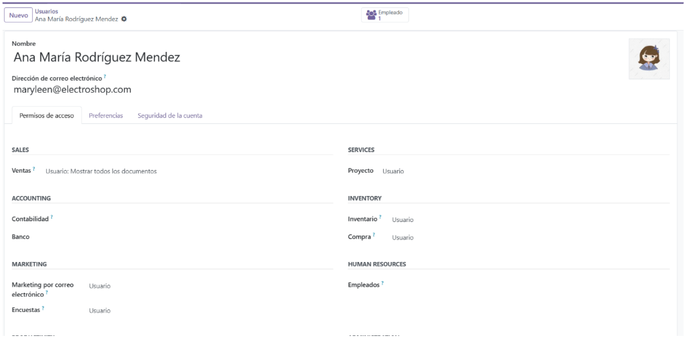
- Creamos el segundo usuario Rimsha.
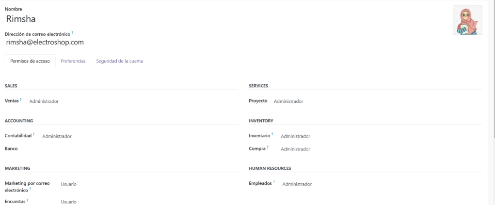
- Aspecto final de los usuarios del sistema.
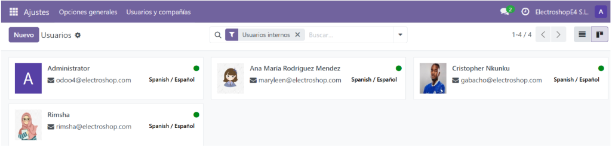
2. Creación de Empleados
Paso 1: Acceder al Módulo de Empleados
- Accede al módulo de Empleados desde el menú de Odoo.
- Dentro del módulo, selecciona la opción Crear para añadir un nuevo empleado.
Paso 2: Crear los Empleados
- Para crear a Ana María Rodríguez Mendez:
- Departamento: Selecciona Informática.
- Puesto de trabajo: Asigna Portavoz.
-
Gerente: Ingresa el nombre de Ana María Rodríguez Mendez.
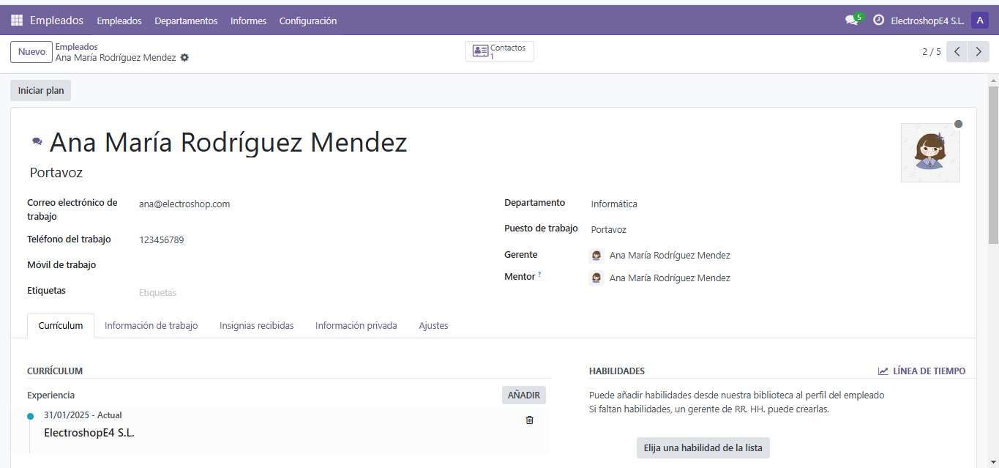 -
Para crear a Laura Alonso Borbolla:
- Departamento: Selecciona Informática.
- Puesto de trabajo: Asigna Secretaria.
-
Gerente: Ingresa el nombre de Laura Alonso Borbolla.
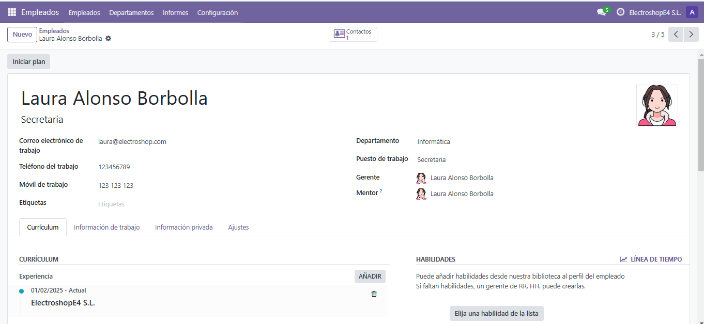 -
Para crear a Mario Fernández Puente:
- Departamento: Selecciona Informática.
- Puesto de trabajo: Asigna Investigador.
-
Gerente: Ingresa el nombre de Mario Fernández Puente.
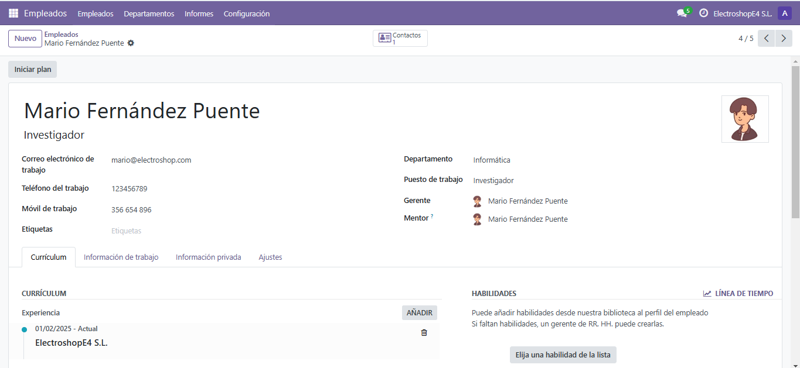 -
Para crear a Rimsha:
- Departamento: Selecciona Ventas.
- Puesto de trabajo: Asigna Responsable de Ventas y Productos.
- Gerente: Ingresa el nombre de Rimsha.

Imágenes de los Empleados
Aspecto final de los empleados.
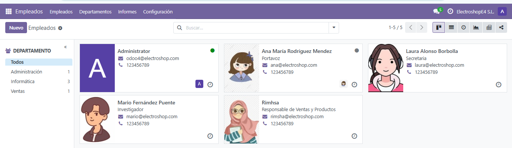
3. Creación de Clientes
Paso 1: Acceder al Módulo de Facturación
- Desde el menú de Odoo, accede a Facturación.
- Selecciona la opción Clientes dentro de Facturación.
Paso 2: Crear Clientes
- Clientes Corporativos:
- Para Abmicros Internet S.L.: -Dirección: Calle José María Pereda, 42-44, Torrelavega, 39300, Cantabria -Teléfono: +34 942 89 52 61 -Correo Electrónico: micros@abmicros.com -Sitio Web: ABMICROS -Etiquetas: AB1 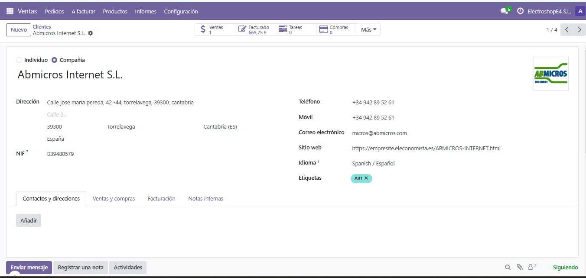
-
Para ENTER SOLUCIONES INFORMÁTOCAS:
- Dirección: Plaza de las Autonomias, 5 ground floor, 39300, Torrelavega
- Teléfono: 42 808 505
- Correo Electrónico: administracion@entersolucionesinformaticas.com
- Sitio Web: ENTER SOLUCIONES INFORMÁTOCAS
- Etiquetas: ENI1

-
Clientes Individuales:
- Para María Angélica Fernández Roza:
- Dirección: P.º de Julio Hauzeur, 59, 39300 Torrelavega, Cantabria
- Puesto de Trabajo: Jefa
- Teléfono: 1233456789
- Correo Electrónico: afernandezroza@educantabria.es 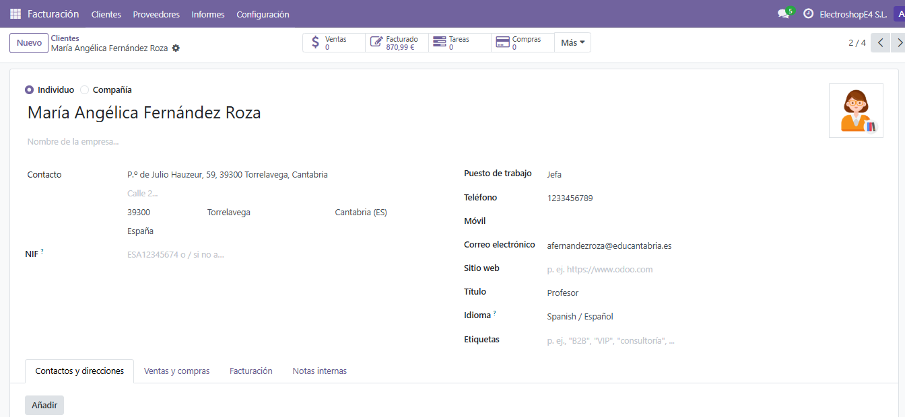
- Para Luis Miguel García Velázquez:
- Dirección: P.º de Julio Hauzeur, 59, 39300 Torrelavega, Cantabria
- Puesto de Trabajo: Jefé
- Teléfono: +34 942 89 03 16
- Correo Electrónico: lgarciavelazquez@educantabria.es 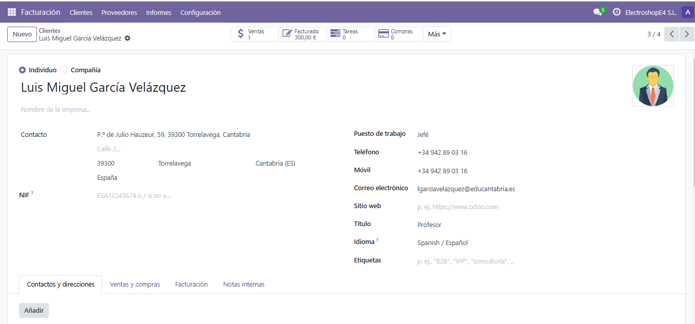
Imágenes de los Clientes:
- Aspecto final de los Clientes 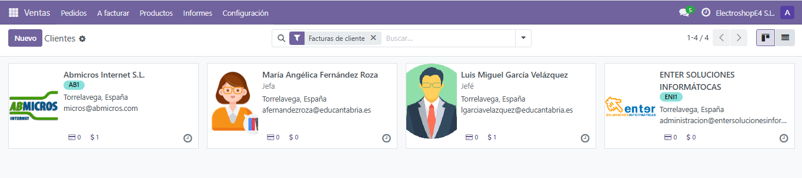
4. Creación de Proveedores
Paso 1: Acceder al Módulo de Compras
- Desde el menú de Odoo, accede a Compras.
- Dentro del módulo, selecciona Pedidos de Proveedores.
Paso 2: Crear Proveedores
- Proveedores:
-
Para Media Markt:
- Dirección: Prima Muntadas Building, C/ Solsonés, 2, Puerta C, 08820 - El Prat de Llobregat, Barcelona
- Teléfono: +34 900 205 000
- Correo Electrónico: customerservice@mediamarkt.es
- Sitio Web: Media Markt
- Etiquetas: MediaM1 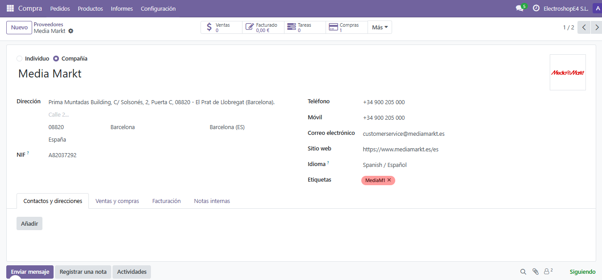
-
Para PC Componentes:
- Dirección: Avda. Europa, Parcelas 2-5 y 2-6 Polígono Industrial Las Salinas, 30840 Alhama de Murcia
- Teléfono: +34 968 97 79 77
- Correo Electrónico: support@pccomponentes.com
- Sitio Web: PC Componentes
- Etiquetas: PC1 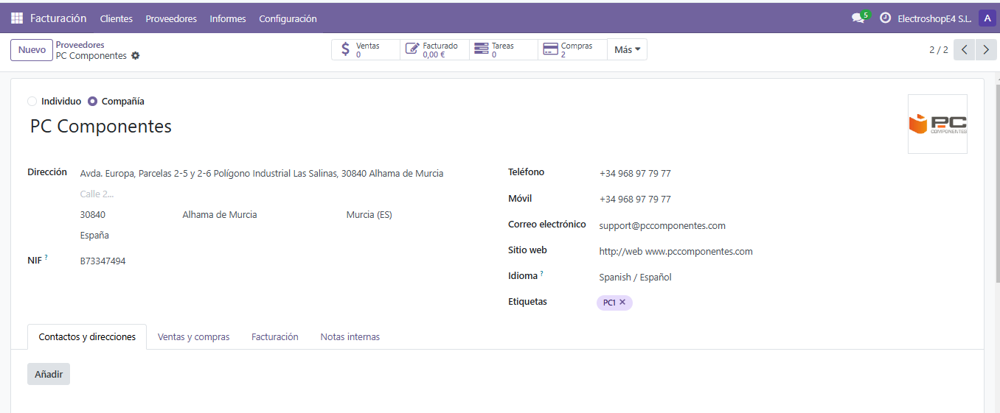
###Imágenes de los Proveedores: - Aspecto final de los Proveedore 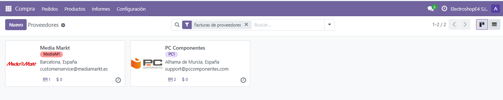